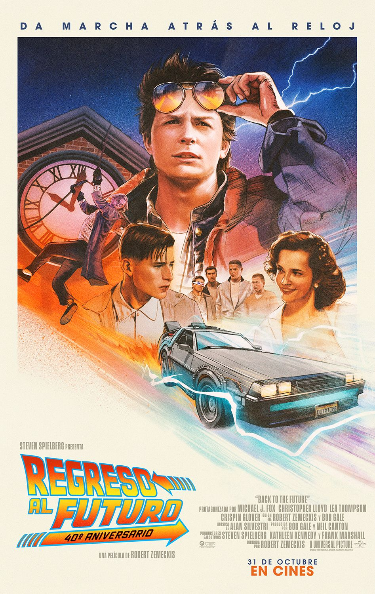

Volver al Futuro
Esta es una pelicula de Ciencia ficción, Comedia, Genero Fantástico, Aventuras, Viajes en el tiempo y Comedia juvenil.
Que cuenta la historia de: El adolescente Marty McFly un amigo de Doc, un científico al que todos toman por loco. Cuando Doc crea una máquina para viajar en el tiempo, un error fortuito hace que Marty llegue a 1955, año en el que sus futuros padres aún no se habían conocido.
Después de impedir su primer encuentro, deberá conseguir que se conozcan y se casen; de lo contrario, su existencia no sería posible.
Fecha de estreno: 26 de diciembre de 1985
Duracion: 1 hora 56 minutos